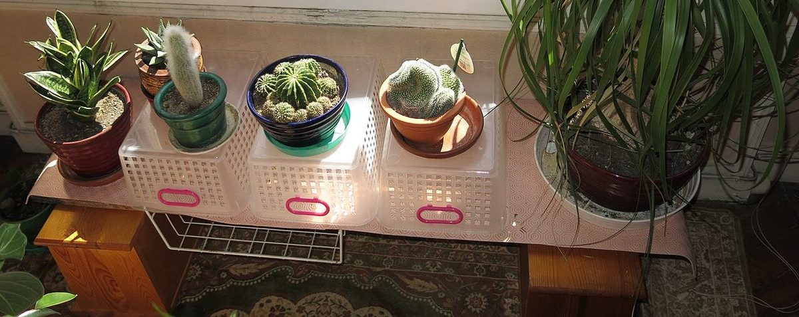

STAGE 4 / RELEASE
口コミ(イメージ例)
Release は、音が消えていくまでの最後の段階です。ここには制作側が創作したひとことを、だんだん小さくなる順に並べています。
以下は制作側が考えた創作のイメージ例で、実在のお客様の投稿ではありません。実際の口コミ・評価とは関係ありません。
営業時間などが分かったら、行ってみたいです。それまでは、Instagramの更新を楽しみにしています。
Instagramをのぞいて、お店のことをもう少し知りたいです。詳しいことが分かったら、行ってみたいと思います。
お店の最新の情報が分かったら、ぜひ行ってみたいです。Instagramの投稿を、楽しみに待っています。
